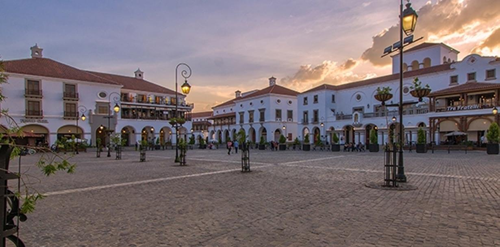
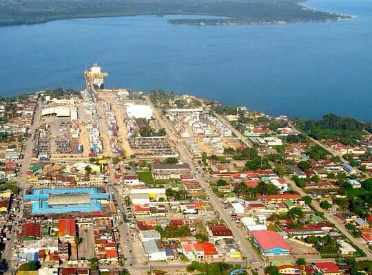

Nuestras Ubicaciones en el país
-
📍 Ciudad de Guatemala
- Zona 10: Ciudad Cayalá
- Zona 1: Enfrente del; Museo Nacional De Historia, Musac

-
📍 Antigua Guatemala
- Enfrente de la entrada al Parque Central De Antigua Guatemala
-
📍 Quetzaltenango (Xela)
- 4ta Calle entre el Parque Xocomil
-
📍 Escuintla
-
📍 Huehuetenango
- A dos calles de la Biblioteca Del Banco de Guatemala
-
📍 Cobán
- A la par del Hotel Puerto Barrios
-
📍 Chiquimula
- A dos Calles del Deportivo Sport GYM
-

📍 Retalhuleu
- Local 23 del Centro Comercial Paseo Las Palmas
-
📍 Puerto Barrios
- LOcal 50 del Centro Comercial Puerto Barrios
-
📍 Flores, Petén
- A las afueras del Centro Comercial MetroPlaza Mundo Maya